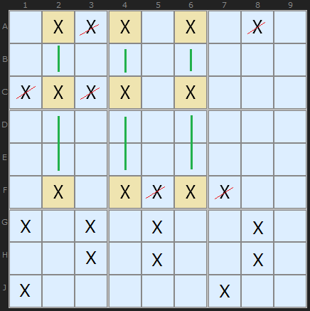
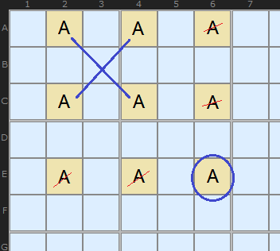
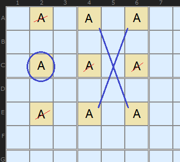
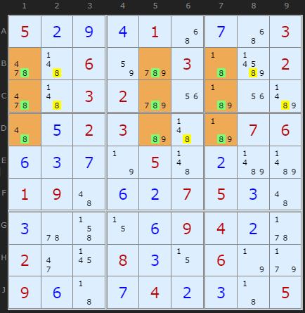
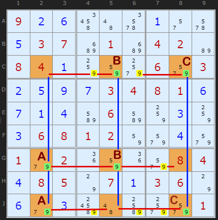
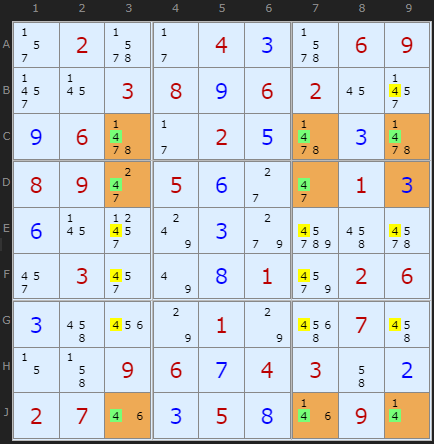

SudokuWiki.org
Strategies for Popular Number Puzzles
Swordfish Strategy
With X-Wings we looked at a rectangle formed by four numbers at the corners. This allowed us to exclude other occurrences of that number in either the row or column. We can extend this pattern to nine cells and achieve even more eliminations.

A Swordfish is a 3 by 3 nine-cell pattern where a candidate is found on three different rows (or three columns) and they line up in the opposite direction. Eventually we will fix three candidates somewhere in those cells which excludes all other candidates in those units.
The shaded cells show the Swordfish where X is unique to three cells in columns 2, 4 and 6. They are aligned on rows A, C and F. This means we can remove all candidate X in the other positions on those rows.

If you are not convinced that the shaded cells really must contain the solutions we can argue this way. All Swordfishes will break down into X-Wings and because we know X-Wings work, so will the Swordfish.
Take this arrangement of candidate A and let’s pretend that E6 is the solution. We ‘remove’ the rest of A in column 6 and row E. That leaves a X-Wing in AC24.

So all cells in the 3 by 3 grid are ‘locked’ together.

To match theory with practise the first example is a perfect 3-3-3 Swordfish, so called because all three candidates in each column are present (that is, no solved 8s in the pattern). The green numbers are the Swordfish cells. The yellow numbers are those cells where 8 can be removed.
A perfect Swordfish is extremely rare. This one is provided by Klaus Brenner who found it in the newspaper La Libre Belgique. (Turn Rectangle Elimination off)
If you remember how Naked and Hidden Triples work you'll remember that they require three numbers in three cells - in total. It's not necessary for every number to be in all three cells. So it is with the Swordfish.
Swordfishes come in a number of variations depending on the number of X present in the nine cells that make up a Swordfish. With an X-Wing you need candidate X in all four cells of the 2 by 2 formation, but with the 3 by 3 Swordfish formation you don't need X in every cell - just as long as it is spread out over 3 by 3 cells. The next example has 9 twice in each column and is called a 2-2-2 Swordfish.
Swordfishes come in a number of variations depending on the number of X present in the nine cells that make up a Swordfish. With an X-Wing you need candidate X in all four cells of the 2 by 2 formation, but with the 3 by 3 Swordfish formation you don't need X in every cell - just as long as it is spread out over 3 by 3 cells. The next example has 9 twice in each column and is called a 2-2-2 Swordfish.

This is a 2-2-2 formation Swordfish in the columns and eliminates in the rows. I have labelled the three pairs AA, BB and CC which form each "2" in the name. Notice how they are staggered so that they still cover three columns. This is a minimal Swordfish but it does the job. We have six 9s that can go in one swoop.
(Turn Rectangle Elimination off)

A Swordfish can be referred to by combining the row and columns numbers, which makes this example CDJ379. In formation terms it is 3-2-3.
(Turn Rectangle Elimination off)
Swordfish Exemplars
These puzzles require the Swordfish strategy at some point but are otherwise trivial or have other similar level strategies.
They make good practice puzzles.
(First 8 are new as of June 2025)
They make good practice puzzles.
(First 8 are new as of June 2025)
Comments
Email addresses are never displayed, but they are required to confirm your comments. When you enter your name and email address, you'll be sent a link to confirm your comment. Line breaks and paragraphs are automatically converted - no need to use <p> or <br> tags.
... by: Benny
... by: Anthony Orchard
Again, thank you.
Trying to force myself to learn tougher strategies.
I've found your solve path button. Wow.
Here on the Swordfish solution, the three examples in the text are surely solvable with Swordfish but the Solve Path on these uses more primitive strategies, generally Rectangle Elimination.
Only the last three exemplars seem to require/call Swordfish as a required more elegant level strategy.
Your addition of Chutel has also undone the need for more elegant strategies in multiple puzzles but that's another conversation. Servicing the old while creating the new must be exhausting.
Regards,
Tony
I have to go find 'necessary' examples but they may not be as accessible as the old ones.
... by: igorsmolkako
Now I'm working on my own algorithm for solving "generalized" Sudoku (hello, NP-completeness).
The general idea is to select “main” positions (equal to N empty rows) and generate unique and valid variants for filling “segments” (row+column+square) of these positions. Then these options can be correlated with each other, thus trying to assemble a complete puzzle from ready-made “pieces”.
For simple classic Sudoku, the number of variants is still relatively acceptable. On Everest, the number of options even for rows is already impressive. On giants (difficult 25x25) it’s even more impressive))
I think that before generating variants, it is worth processing the field with some strategies for eliminating unnecessary "possible numbers". Swordfish looks promising.
Should the size of the generated template always be equal to 3 or should it be equal to the size of the squares? For 16x16 it should be 4, for 25x25 it should be 5 etc...
I apologize for possible errors in the text. I’m writing this while looking at Google Translator. So far my English is not as good as I would like, although I am working on it)
... by: kavalasax
I wonder if they are somehow related ?
... by: Carman847
... by: sid
... by: William Drabkin
... by: Tilli
I think I have a fundamental issue missing :)
... by: Mowpar
... by: Wondereally
... by: Pete Willetts
My compliments on the site. Please ignore my previous comment. There is indeed a swordfish pattern for the possible value 2 but it doesn't eliminate anything. Indeed I found several swordfish patterns in the example similarly.
I was using the example to test code in a solver that I've written. There were lots of print statements to show what was happening. The code was reporting eliminating possible values when it hadn't. D'OH! Which led me to think I'd found another valid swordfish.
Regards
Pete
... by: Wambugu
That being the case,on example 1 why did you use the last row yet it contains more than three 9s.
Also on your perfect swordfish example,why do rows B,C&D contain more than three 8s
kenya
... by: Morris
... by: resat
... by: Confused
... by: Sukjae Yu
I am not in a position to comment. And it is not my intention. I am just learninin . But, when I found your site, I felt blessed. It is just what I have been hoping for. It is excellent. You are genius. I only wish to understand a better part of what you are trying to impart.
Best Regards
Sukjae Yu
... by: G
PS-I love the solver. I use it to "cheat" when I get stuck with the app on my phone. You taught me how to do an X-Wing by eye and I love it!
... by: KeithD
I'd like to reiterate Pieter's point about the potential for confusion in the write-up of the 2-2-2 example.The sentence "The next example has 9 twice in each row and is called a 2-2-2 Swordfish" strongly suggests, twice, that the swordfish is in the rows, and the reference in the following paragraph to the pairs (visibly in the rows) that are "staggered so that they still cover three columns" reinforces this. Even though the colours in the diagram show that the swordfish is in the columns, it is still initially confusing - the more so because it would be a 2-2-2 in either orientation. I have to wonder whether the example has been reoriented at some stage during development.
An initial fix would be to change "rows" to "columns" in the quoted sentence. Beyond that, I cannot see what is gained by the comment that it "reduces to three pairs", when other 2-2-2 examples could "reduce" to various combinations of 3-2-1. I don't recall you saying anything similar anywhere else and it would, I think, be clearer just to say, as you normally do and as you do in the example that follows, that the swordfish is in the columns and the eliminations take place in the rows.
... by: nono
swordfishs will then be 3x2x3 and no 3x3x3.
merci d'avance pour la réponse
... by: jim
... by:
Thanks,
Ken
... by: Eric
The Swordfish method can be explained as follows:
Statement:
Number 5 is either in the cells B+C+F or in cells A+D+E.
Proof:
- If cell B would contain numer 5, then cells B and D cannot contain 5. Therefore, on row F, cell C must contain a 5 (single candidate), and at row J, cell F must contain a 5 (again: single candidate).
- If cell A would contain number 5 than cell D+E must contain a 5 for same reason.
- At row A, number 5 can only be filled in at cell A or B, and therefore, number 5 must be present in cells B+C+F or in cells A+D+E.
Based on this statement, the pairs CE, AF and BD are locked pairs as well. Since number 5 must be in cell C or E on column 2, cell X cannot contain number 5. In column 5 cell A or F must contain number 5, and at column 9 cell B or D must contain number 5. Number 5 can thus be removed from all other cells at these columns.
Next to pairs CE, AF and BD, the following pairs are also locked pairs: AC, BE, DF.
These locked pairs are not valuable for the Swordfish strategy, but (in my opinion) these locked pairs represent the Swordfish pattern and gave name to this strategy.
I would like to suggest that this topic starts of with the 3-3-3 Swordfish to fully explain this subject and then focus on 2-2-2, 2-1-2, etc.
I also see great simillarity with naked pairs/triples and quads and wonder if swordfish detection for more than 3 rows or columns is useful.
The simplest 2-2-2 formation in Example 1 is "A locked set of 3 locked-pairs (sharing the same 3 rows and same 3 columns)". And as Jef points out, boxes can also be involved (if there is a locked pair linking with the other locked pairs/triples)
Also re Example 1, I think your labelling is confusing Andrew! Yes it reduces to AA, BB and CC, but to detect the Sword-Fish, the 3 pairs of 9's one needs to find are in Cols 2, 5 & 8 labelled BC, AB & AC.
Still the BEST Sudoku site on the net!
... by: WLP
... by: Prasolov V.
... by: JK
... by: lec
... by: p davis
any wrapped AIC chain eg.
{a = b - c = d - e = f} - a implies a 'fish'. But as far as spotting patterns and associated eliminations (swordfish in rows, eliminations in columns) it doesn't seem particularly useful, except in theory to extend the definition of SwordFish'.
Your example is:
{r9c3 = r9c4 - r78c6 = r23c6 - r1c45 = r1c3} - r9c3.
this wrapped AIC chain eliminates all non-fish candidates in columns 345.
It's just a structural coincidence that the eliminations all occur in those columns here (so I guess you could technically call the pattern a swordfish).
BTW: a Finned X-Wing is a 2 string Kite is a simple AIC chain:
a = b - c = d, where the geometry of the chain is constrained to a rectangle with a 'group' node in one corner.
... by: Trev
Awesome site by the way!
... by: CS VIDYASAGAR
... by: jef
. . x|x x .|. . .
. . .|. . .|. . .
. . .|. . .|. . .
-----+-----+-----
. . .|x . .|. . .
. . .|. x .|. . .
. . .|. . .|. . .
-----+-----+-----
. . .|. . .|. . .
. . .|. . .|. . .
. . x|x . .|. . .
Swordfish row 1, box[2,2] and row 9.
Is your solver finding this pattern?
Have you examples of this pattern?
Kind regards,
Jef
PS I totally agree with your remarks on J.F. Crook's paper, nothing new and not a real solution.
http://users.telenet.be/vandenberghe.jef/sudoku/